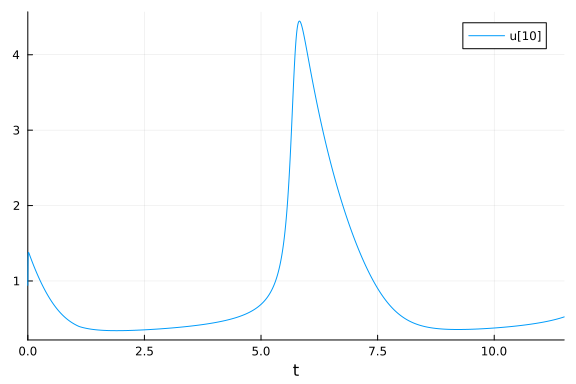
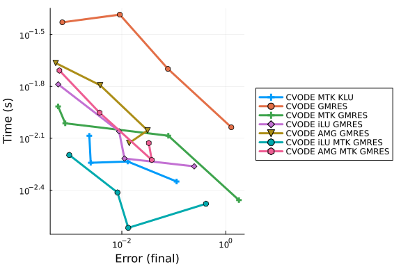

Brusselator Work-Precision Diagrams
using OrdinaryDiffEq, DiffEqDevTools, Sundials, ParameterizedFunctions, Plots,
ODEInterfaceDiffEq, LSODA, SparseArrays, LinearSolve,
LinearAlgebra, IncompleteLU, AlgebraicMultigrid, Symbolics, ModelingToolkit,
RecursiveFactorization
gr()
const N = 8
xyd_brusselator = range(0,stop=1,length=N)
brusselator_f(x, y, t) = (((x-0.3)^2 + (y-0.6)^2) <= 0.1^2) * (t >= 1.1) * 5.
limit(a, N) = a == N+1 ? 1 : a == 0 ? N : a
function brusselator_2d_loop(du, u, p, t)
A, B, alpha, dx = p
alpha = alpha/dx^2
@inbounds for I in CartesianIndices((N, N))
i, j = Tuple(I)
x, y = xyd_brusselator[I[1]], xyd_brusselator[I[2]]
ip1, im1, jp1, jm1 = limit(i+1, N), limit(i-1, N), limit(j+1, N), limit(j-1, N)
du[i,j,1] = alpha*(u[im1,j,1] + u[ip1,j,1] + u[i,jp1,1] + u[i,jm1,1] - 4u[i,j,1]) +
B + u[i,j,1]^2*u[i,j,2] - (A + 1)*u[i,j,1] + brusselator_f(x, y, t)
du[i,j,2] = alpha*(u[im1,j,2] + u[ip1,j,2] + u[i,jp1,2] + u[i,jm1,2] - 4u[i,j,2]) +
A*u[i,j,1] - u[i,j,1]^2*u[i,j,2]
end
end
p = (3.4, 1., 10., step(xyd_brusselator))
input = rand(N,N,2)
output = similar(input)
sparsity_pattern = Symbolics.jacobian_sparsity(brusselator_2d_loop,output,input,p,0.0)
jac_sparsity = Float64.(sparse(sparsity_pattern))
f = ODEFunction{true, SciMLBase.FullSpecialize}(brusselator_2d_loop;jac_prototype=jac_sparsity)
function init_brusselator_2d(xyd)
N = length(xyd)
u = zeros(N, N, 2)
for I in CartesianIndices((N, N))
x = xyd[I[1]]
y = xyd[I[2]]
u[I,1] = 22*(y*(1-y))^(3/2)
u[I,2] = 27*(x*(1-x))^(3/2)
end
u
end
u0 = init_brusselator_2d(xyd_brusselator)
prob = ODEProblem(f,u0,(0.,11.5),p);prob_mtk = ODEProblem(complete(modelingtoolkitize(prob)),[],(0.0,11.5),jac=true,sparse=true);Also comparing with MethodOfLines.jl:
using MethodOfLines, DomainSets
@parameters x y t
@variables u(..) v(..)
Dt = Differential(t)
Dx = Differential(x)
Dy = Differential(y)
Dxx = Differential(x)^2
Dyy = Differential(y)^2
∇²(u) = Dxx(u) + Dyy(u)
brusselator_f(x, y, t) = (((x-0.3)^2 + (y-0.6)^2) <= 0.1^2) * (t >= 1.1) * 5.
x_min = y_min = t_min = 0.0
x_max = y_max = 1.0
t_max = 11.5
α = 10.
u0_mol(x,y,t) = 22(y*(1-y))^(3/2)
v0_mol(x,y,t) = 27(x*(1-x))^(3/2)
eq = [Dt(u(x,y,t)) ~ 1. + v(x,y,t)*u(x,y,t)^2 - 4.4*u(x,y,t) + α*∇²(u(x,y,t)) + brusselator_f(x, y, t),
Dt(v(x,y,t)) ~ 3.4*u(x,y,t) - v(x,y,t)*u(x,y,t)^2 + α*∇²(v(x,y,t))]
domains = [x ∈ Interval(x_min, x_max),
y ∈ Interval(y_min, y_max),
t ∈ Interval(t_min, t_max)]
bcs = [u(x,y,0) ~ u0_mol(x,y,0),
u(0,y,t) ~ u(1,y,t),
u(x,0,t) ~ u(x,1,t),
v(x,y,0) ~ v0_mol(x,y,0),
v(0,y,t) ~ v(1,y,t),
v(x,0,t) ~ v(x,1,t)]
@named pdesys = PDESystem(eq,bcs,domains,[x,y,t],[u(x,y,t),v(x,y,t)])
# Method of lines discretization
dx = 1/N
dy = 1/N
order = 2
discretization = MOLFiniteDifference([x=>dx, y=>dy], t; approx_order = order, jac = true, sparse = true, wrap = Val(false))
# Convert the PDE system into an ODE problem
prob_mol = discretize(pdesys,discretization)ODEProblem with uType Vector{Float64} and tType Float64. In-place: true
Non-trivial mass matrix: false
timespan: (0.0, 11.5)
u0: 128-element Vector{Float64}:
0.7957923865311465
0.0
0.7957923865311465
1.7861773953054048
0.7957923865311465
1.7861773953054048
1.7861773953054048
2.496258797360249
2.496258797360249
2.496258797360249
⋮
0.9766542925609525
0.0
0.0
0.0
0.0
0.0
0.0
0.0
0.0using Base.Experimental: Const, @aliasscope
macro vp(expr)
nodes = (Symbol("llvm.loop.vectorize.predicate.enable"), 1)
if expr.head != :for
error("Syntax error: loopinfo needs a for loop")
end
push!(expr.args[2].args, Expr(:loopinfo, nodes))
return esc(expr)
end
struct Brusselator2DLoop <: Function
N::Int
s::Float64
end
function (b::Brusselator2DLoop)(du, unc, p, t)
N = b.N
s = b.s
A, B, alpha, dx = p
alpha = alpha/abs2(dx)
u = Base.Experimental.Const(unc)
Base.Experimental.@aliasscope begin
@inbounds @fastmath begin
b = ((abs2(-0.3) + abs2(-0.6)) <= abs2(0.1)) * (t >= 1.1) * 5.0
du1 = alpha*(u[N,1,1] + u[2,1,1] + u[1,2,1] + u[1,N,1] - 4u[1,1,1]) +
B + abs2(u[1,1,1])*u[1,1,2] - (A + 1)*u[1,1,1] + b
du2 = alpha*(u[N,1,2] + u[2,1,2] + u[1,2,2] + u[1,N,2] - 4u[1,1,2]) +
A*u[1,1,1] - abs2(u[1,1,1])*u[1,1,2]
du[1,1,1] = du1
du[1,1,2] = du2
@vp for i = 2:N-1
x = (i-1)*s
ip1 = i+1
im1 = i-1
b = ((abs2(x-0.3) + abs2(-0.6)) <= abs2(0.1)) * (t >= 1.1) * 5.0
du1 = alpha*(u[im1,1,1] + u[ip1,1,1] + u[i,2,1] + u[i,N,1] - 4u[i,1,1]) +
B + abs2(u[i,1,1])*u[i,1,2] - (A + 1)*u[i,1,1] + b
du2 = alpha*(u[im1,1,2] + u[ip1,1,2] + u[i,2,2] + u[i,N,2] - 4u[i,1,2]) +
A*u[i,1,1] - abs2(u[i,1,1])*u[i,1,2]
du[i,1,1] = du1
du[i,1,2] = du2
end
b = ((abs2(0.7) + abs2(-0.6)) <= abs2(0.1)) * (t >= 1.1) * 5.0
du1 = alpha*(u[N-1,1,1] + u[1,1,1] + u[N,2,1] + u[N,N,1] - 4u[N,1,1]) +
B + abs2(u[N,1,1])*u[N,1,2] - (A + 1)*u[N,1,1] + b
du2 = alpha*(u[N-1,1,2] + u[1,1,2] + u[N,2,2] + u[N,N,2] - 4u[N,1,2]) +
A*u[N,1,1] - abs2(u[N,1,1])*u[N,1,2]
du[N,1,1] = du1
du[N,1,2] = du2
for j = 2:N-1
y = (j-1)*s
jp1 = j+1
jm1 = j-1
b0 = ((abs2(-0.3) + abs2(y-0.6)) <= abs2(0.1)) * (t >= 1.1) * 5.0
du[1,j,1] = alpha*(u[N,j,1] + u[2,j,1] + u[1,jp1,1] + u[1,jm1,1] - 4u[1,j,1]) +
B + abs2(u[1,j,1])*u[1,j,2] - (A + 1)*u[1,j,1] + b0
du[1,j,2] = alpha*(u[N,j,2] + u[2,j,2] + u[1,jp1,2] + u[1,jm1,2] - 4u[1,j,2]) +
A*u[1,j,1] - abs2(u[1,j,1])*u[1,j,2]
@vp for i = 2:N-1
x = (i-1)*s
b = ((abs2(x-0.3) + abs2(y-0.6)) <= abs2(0.1)) * (t >= 1.1) * 5.0
du1 = alpha*(u[i-1,j,1] + u[i+1,j,1] + u[i,jp1,1] + u[i,jm1,1] - 4u[i,j,1]) +
B + abs2(u[i,j,1])*u[i,j,2] - (A + 1)*u[i,j,1] + b
du2 = alpha*(u[i-1,j,2] + u[i+1,j,2] + u[i,jp1,2] + u[i,jm1,2] - 4u[i,j,2]) +
A*u[i,j,1] - abs2(u[i,j,1])*u[i,j,2]
du[i,j,1] = du1
du[i,j,2] = du2
end
bN = ((abs2(0.7) + abs2(y-0.6)) <= abs2(0.1)) * (t >= 1.1) * 5.0
du[N,j,1] = alpha*(u[N-1,j,1] + u[1,j,1] + u[N,jp1,1] + u[N,jm1,1] - 4u[N,j,1]) +
B + abs2(u[N,j,1])*u[N,j,2] - (A + 1)*u[N,j,1] + bN
du[N,j,2] = alpha*(u[N-1,j,2] + u[1,j,2] + u[N,jp1,2] + u[N,jm1,2] - 4u[N,j,2]) +
A*u[N,j,1] - abs2(u[N,j,1])*u[N,j,2]
end
b = ((abs2(-0.3) + abs2(0.4)) <= abs2(0.1)) * (t >= 1.1) * 5.0
du1 = alpha*(u[N,N,1] + u[2,N,1] + u[1,1,1] + u[1,N-1,1] - 4u[1,N,1]) +
B + abs2(u[1,N,1])*u[1,N,2] - (A + 1)*u[1,N,1] + b
du2 = alpha*(u[N,N,2] + u[2,N,2] + u[1,1,2] + u[1,N-1,2] - 4u[1,N,2]) +
A*u[1,N,1] - abs2(u[1,N,1])*u[1,N,2]
du[1,N,1] = du1
du[1,N,2] = du2
@vp for i = 2:N-1
x = (i-1)*s
ip1 = i+1
im1 = i-1
b = ((abs2(x-0.3) + abs2(0.4)) <= abs2(0.1)) * (t >= 1.1) * 5.0
du1 = alpha*(u[im1,N,1] + u[ip1,N,1] + u[i,1,1] + u[i,N-1,1] - 4u[i,N,1]) +
B + abs2(u[i,N,1])*u[i,N,2] - (A + 1)*u[i,N,1] + b
du2 = alpha*(u[im1,N,2] + u[ip1,N,2] + u[i,1,2] + u[i,N-1,2] - 4u[i,N,2]) +
A*u[i,N,1] - abs2(u[i,N,1])*u[i,N,2]
du[i,N,1] = du1
du[i,N,2] = du2
end
b = ((abs2(0.7) + abs2(0.4)) <= abs2(0.1)) * (t >= 1.1) * 5.0
du1 = alpha*(u[N-1,N,1] + u[1,N,1] + u[N,1,1] + u[N,N-1,1] - 4u[N,N,1]) +
B + abs2(u[N,N,1])*u[N,N,2] - (A + 1)*u[N,N,1] + b
du2 = alpha*(u[N-1,N,2] + u[1,N,2] + u[N,1,2] + u[N,N-1,2] - 4u[N,N,2]) +
A*u[N,N,1] - abs2(u[N,N,1])*u[N,N,2]
du[N,N,1] = du1
du[N,N,2] = du2
end
end
end
function fast_bruss(N)
xyd_brusselator = range(0,stop=1,length=N)
brusselator_2d_loop = Brusselator2DLoop(N,Float64(step(xyd_brusselator)))
p = (3.4, 1., 10., step(xyd_brusselator))
input = rand(N,N,2)
output = similar(input)
sparsity_pattern = Symbolics.jacobian_sparsity(brusselator_2d_loop,output,input,p,0.0)
jac_sparsity = Float64.(sparse(sparsity_pattern))
f = ODEFunction(brusselator_2d_loop;jac_prototype=jac_sparsity)
u0 = zeros(N, N, 2)
@inbounds for I in CartesianIndices((N, N))
x = xyd_brusselator[I[1]]
y = xyd_brusselator[I[2]]
u0[I,1] = 22*(y*(1-y))^(3/2)
u0[I,2] = 27*(x*(1-x))^(3/2)
end
return ODEProblem(f,u0,(0.,11.5),p)
end
fastprob = fast_bruss(N)ODEProblem with uType Array{Float64, 3} and tType Float64. In-place: true
Non-trivial mass matrix: false
timespan: (0.0, 11.5)
u0: 8×8×2 Array{Float64, 3}:
[:, :, 1] =
0.0 0.942661 2.02828 2.66625 2.66625 2.02828 0.942661 0.0
0.0 0.942661 2.02828 2.66625 2.66625 2.02828 0.942661 0.0
0.0 0.942661 2.02828 2.66625 2.66625 2.02828 0.942661 0.0
0.0 0.942661 2.02828 2.66625 2.66625 2.02828 0.942661 0.0
0.0 0.942661 2.02828 2.66625 2.66625 2.02828 0.942661 0.0
0.0 0.942661 2.02828 2.66625 2.66625 2.02828 0.942661 0.0
0.0 0.942661 2.02828 2.66625 2.66625 2.02828 0.942661 0.0
0.0 0.942661 2.02828 2.66625 2.66625 2.02828 0.942661 0.0
[:, :, 2] =
0.0 0.0 0.0 0.0 0.0 0.0 0.0 0.0
1.1569 1.1569 1.1569 1.1569 1.1569 1.1569 1.1569 1.1569
2.48926 2.48926 2.48926 2.48926 2.48926 2.48926 2.48926 2.48926
3.27221 3.27221 3.27221 3.27221 3.27221 3.27221 3.27221 3.27221
3.27221 3.27221 3.27221 3.27221 3.27221 3.27221 3.27221 3.27221
2.48926 2.48926 2.48926 2.48926 2.48926 2.48926 2.48926 2.48926
1.1569 1.1569 1.1569 1.1569 1.1569 1.1569 1.1569 1.1569
0.0 0.0 0.0 0.0 0.0 0.0 0.0 0.0sol = solve(prob,CVODE_BDF(),abstol=1/10^14,reltol=1/10^14)
sol2 = solve(prob_mtk,CVODE_BDF(linear_solver = :KLU),abstol=1/10^14,reltol=1/10^14)
sol3 = solve(prob_mol,CVODE_BDF(linear_solver = :KLU),abstol=1/10^14,reltol=1/10^14,wrap=Val(false))retcode: Success
Interpolation: 3rd order Hermite
t: 7154-element Vector{Float64}:
0.0
1.4238870862469186e-15
1.4240294749555432e-11
1.5662900337424728e-10
2.9901771199893913e-10
5.160801982088018e-10
8.725711856843929e-10
1.4781897817740746e-9
2.5196750445777676e-9
4.319034943910645e-9
⋮
11.495670182254235
11.496258130725684
11.496846079197132
11.49743402766858
11.498021976140029
11.498609924611477
11.499197873082926
11.499785821554374
11.5
u: 7154-element Vector{Vector{Float64}}:
[0.7957923865311465, 0.0, 0.7957923865311465, 1.7861773953054048, 0.795792
3865311465, 1.7861773953054048, 1.7861773953054048, 2.496258797360249, 2.49
6258797360249, 2.496258797360249 … 0.9766542925609525, 0.9766542925609525
, 0.0, 0.0, 0.0, 0.0, 0.0, 0.0, 0.0, 0.0]
[0.7957923865313211, 1.451815570303514e-12, 0.7957923865313202, 1.78617739
5305144, 0.7957923865313222, 1.7861773953051494, 1.7861773953051396, 2.4962
587973598276, 2.4962587973598382, 2.496258797359819 … 0.9766542925611731,
0.9766542925611701, 1.783878759584308e-12, 1.788673427427272e-12, 1.792111
0849383924e-12, 1.7933395009321227e-12, 1.7921110849383924e-12, 1.788673427
427272e-12, 1.783878759584308e-12, 1.7800261566757715e-12]
[0.7957923882778083, 1.4519607284922573e-8, 0.7957923882690007, 1.78617739
26974722, 0.7957923882887697, 1.7861773927526943, 1.7861773926531002, 2.496
2587931457563, 2.496258793253612, 2.4962587930590927 … 0.9766542947672135
, 0.9766542947374913, 1.7840571189693174e-8, 1.7888522661068798e-8, 1.79229
0267213179e-8, 1.7935188059760784e-8, 1.792290267213179e-8, 1.7888522661068
798e-8, 1.7840571189693174e-8, 1.7802041309561312e-8]
[0.7957924057426853, 1.5970114639958973e-7, 0.7957924056458101, 1.78617736
6620756, 0.7957924058632492, 1.7861773672281442, 1.7861773661327085, 2.4962
587510050454, 2.4962587521913506, 2.496258750051828 … 0.9766543168276247,
0.9766543165007099, 1.9622842530506597e-7, 1.967558434287292e-7, 1.9713398
90601318e-7, 1.9726911599160383e-7, 1.971339890601318e-7, 1.967558434287292
2e-7, 1.9622842530506597e-7, 1.958046352534055e-7]
[0.795792423207569, 3.048826647424529e-7, 0.7957924230226263, 1.7861773405
440422, 0.7957924234377355, 1.7861773417035964, 1.7861773396123193, 2.49625
87088643353, 2.49625871112909, 2.4962587070445643 … 0.9766543388880443, 0
.976654338263937, 3.746162540951588e-7, 3.7562313871805606e-7, 3.7634504981
817797e-7, 3.766030182291104e-7, 3.7634504981817797e-7, 3.7562313871805606e
-7, 3.746162540951588e-7, 3.738072040103176e-7]
[0.7957924498316827, 5.262025668875596e-7, 0.7957924495124866, 1.786177300
7917632, 0.7957924502289312, 1.7861773027930594, 1.7861772991836857, 2.4962
586446235178, 2.4962586485322995, 2.4962586414827426 … 0.9766543725177618
, 0.9766543714406037, 6.465570446521938e-7, 6.4829484498624e-7, 6.495408042
522046e-7, 6.499860365114017e-7, 6.495408042522046e-7, 6.4829484498624e-7,
6.465570446521938e-7, 6.451606905618051e-7]
[0.7957924935576396, 8.89685573216431e-7, 0.7957924930179534, 1.7861772355
04911, 0.7957924942292941, 1.7861772388886357, 1.7861772327860284, 2.496258
5391180863, 2.4962585457269233, 2.49625853380777 … 0.9766544277493293, 0.
9766544259281075, 1.0931768713531361e-6, 1.0961150848995844e-6, 1.098221709
9852221e-6, 1.0989744932937875e-6, 1.0982217099852221e-6, 1.096115084899584
4e-6, 1.093176871353136e-6, 1.090815963602329e-6]
[0.7957925678408408, 1.507182105415708e-6, 0.795792566926579, 1.7861771245
934988, 0.7957925689786658, 1.7861771303257374, 1.786177119987546, 2.496258
3598820105, 2.4962583710777873, 2.4962583508860114 … 0.9766545215786646,
0.9766545184934048, 1.851908890610154e-6, 1.8568864030720786e-6, 1.86045515
30688154e-6, 1.8617304131607846e-6, 1.8604551530688154e-6, 1.85688640307207
86e-6, 1.8519088906101537e-6, 1.8479093696587557e-6]
[0.7957926955863498, 2.569092925105295e-6, 0.7957926940279282, 1.786176933
8587075, 0.7957926975258514, 1.7861769436296946, 1.7861769260075573, 2.4962
580516488995, 2.4962580707328526, 2.4962580363146283 … 0.9766546829378282
, 0.976654677678802, 3.1567028518411076e-6, 3.1651873493460506e-6, 3.171270
5154947235e-6, 3.1734442784052463e-6, 3.1712705154947235e-6, 3.165187349346
051e-6, 3.156702851841107e-6, 3.1498854063315676e-6]
[0.7957929162914915, 4.403738835580722e-6, 0.795792913620164, 1.7861766043
291254, 0.7957929196160421, 1.7861766210777965, 1.7861765908713108, 2.49625
75191188887, 2.4962575518311163, 2.4962574928341126 … 0.9766549617170395,
0.976654952702444, 5.410974011281118e-6, 5.425517457364361e-6, 5.435944724
54426e-6, 5.439670809404468e-6, 5.43594472454426e-6, 5.425517457364361e-6,
5.410974011281117e-6, 5.399288095520097e-6]
⋮
[4.073495912749702, 4.073638757200233, 4.073323040735019, 4.07363875720023
2, 4.073632022500362, 4.073824013443993, 4.073418023455657, 4.0740648879014
59, 4.074447622151669, 4.073680079964993 … 1.1852838345304635, 1.18528959
24567945, 1.1852881020783457, 1.1852853248671917, 1.185278202082674, 1.1852
702060305513, 1.185266289530812, 1.1852702060305513, 1.1852782020826735, 1.
1852853248671917]
[4.075189133347022, 4.07533196371176, 4.075016283338031, 4.07533196371176,
4.075325226809186, 4.075517200930757, 4.075111255099822, 4.075758057107929
5, 4.076140763611948, 4.07537328353993 … 1.1818745655894074, 1.1818803006
598808, 1.181878816211387, 1.1818760499963166, 1.1818689553730377, 1.181860
9908482582, 1.181857089729085, 1.1818609908482582, 1.1818689553730377, 1.18
18760499963166]
[4.076854355242137, 4.076997171600592, 4.076681527114095, 4.07699717160059
2, 4.076990432508073, 4.077182389902387, 4.076776487979048, 4.0774232279020
21, 4.0778059068160815, 4.077038488508621 … 1.1784923081143166, 1.1784980
204584317, 1.1784965419062479, 1.1784937866250504, 1.1784867200038198, 1.17
8478786828448, 1.178474901003238, 1.1784787868284483, 1.17848672000382, 1.1
784937866250504]
[4.078491705898897, 4.078634508330692, 4.078318899526886, 4.07863450833069
2, 4.078627767061003, 4.078819707823003, 4.078413849557099, 4.0790605277480
1, 4.07944317922858, 4.078675822335056 … 1.1751369510656278, 1.1751426408
130667, 1.1751411681235016, 1.175138423713877, 1.1751313849352747, 1.175123
482931115, 1.1751196123131358, 1.175123482931115, 1.175131384935275, 1.1751
38423713877]
[4.0801013138479965, 4.080244102432861, 4.079928529106944, 4.0802441024328
61, 4.080237358998788, 4.080429283223542, 4.080023468364593, 4.080670085176
972, 4.08105270938073, 4.080285413550056 … 1.17180838226167, 1.1718140495
422777, 1.171812582681598, 1.1718098490811666, 1.1718028379855678, 1.171794
9669741916, 1.1717911114765946, 1.1717949669741916, 1.1718028379855678, 1.1
718098490811666]
[4.081683308652947, 4.0818260834707, 4.081510545417642, 4.0818260834707, 4
.081819337885041, 4.082011245667728, 4.081605473964973, 4.082252029752756,
4.082634626836564, 4.081867391717247 … 1.168506488412078, 1.1685121333558
43, 1.168510672290278, 1.1685079494365909, 1.1685009658641894, 1.1684931256
669622, 1.1684892852027966, 1.1684931256669624, 1.1685009658641894, 1.16850
79494365909]
[4.083237820876308, 4.08338058200685, 4.083065079021423, 4.08338058200685,
4.083373834282409, 4.083565725718308, 4.083159996920741, 4.083806492038218
, 4.084189062159099, 4.083421887399286 … 1.1652311551509598, 1.1652367778
879948, 1.1652353225837428, 1.1652326104142898, 1.1652256542051223, 1.16521
78446432306, 1.1652140191254554, 1.165217844643231, 1.1652256542051223, 1.1
652326104142898]
[4.084764982046198, 4.084907729569497, 4.0845922614463035, 4.0849077295694
97, 4.084900979719087, 4.085092854903557, 4.0846871687599675, 4.08533360356
1728, 4.085716146876844, 4.084949032124374 … 1.1619822670698108, 1.161987
867730333, 1.161986418153566, 1.161983716605785, 1.1619767875997546, 1.1619
690084942325, 1.1619651978357295, 1.1619690084942327, 1.1619767875997549, 1
.161983716605785]
[4.085314527241038, 4.0854572698273595, 4.085141814352747, 4.0854572698273
59, 4.085450519205684, 4.085642388493778, 4.0852367178257625, 4.08588313074
3817, 4.08626566433318, 4.085498571352684 … 1.1608053075504512, 1.1608109
00201295, 1.1608094527025312, 1.1608067550084689, 1.1607998358722191, 1.160
7920678168757, 1.1607882625496622, 1.160792067816876, 1.1607998358722191, 1
.1608067550084689]test_sol = [sol,sol2,sol,sol3]
probs = [prob,prob_mtk,fastprob,prob_mol];plot(sol, idxs = 1)
plot(sol, idxs = 10)
Setup Preconditioners
OrdinaryDiffEq
function incompletelu(W,du,u,p,t,newW,Plprev,Prprev,solverdata)
if newW === nothing || newW
Pl = ilu(convert(AbstractMatrix,W), τ = 50.0)
else
Pl = Plprev
end
Pl,nothing
end
function algebraicmultigrid(W,du,u,p,t,newW,Plprev,Prprev,solverdata)
if newW === nothing || newW
Pl = aspreconditioner(ruge_stuben(convert(AbstractMatrix,W)))
else
Pl = Plprev
end
Pl,nothing
endalgebraicmultigrid (generic function with 1 method)Sundials
const jaccache = prob_mtk.f.jac(prob.u0,prob.p,0.0)
const W = I - 1.0*jaccache
prectmp = ilu(W, τ = 50.0)
const preccache = Ref(prectmp)
function psetupilu(p, t, u, du, jok, jcurPtr, gamma)
if !jok
prob_mtk.f.jac(jaccache,u,p,t)
jcurPtr[] = true
# W = I - gamma*J
@. W = -gamma*jaccache
idxs = diagind(W)
@. @view(W[idxs]) = @view(W[idxs]) + 1
# Build preconditioner on W
preccache[] = ilu(W, τ = 5.0)
end
end
function precilu(z,r,p,t,y,fy,gamma,delta,lr)
ldiv!(z,preccache[],r)
end
prectmp2 = aspreconditioner(ruge_stuben(W, presmoother = AlgebraicMultigrid.Jacobi(rand(size(W,1))), postsmoother = AlgebraicMultigrid.Jacobi(rand(size(W,1)))))
const preccache2 = Ref(prectmp2)
function psetupamg(p, t, u, du, jok, jcurPtr, gamma)
if !jok
prob_mtk.f.jac(jaccache,u,p,t)
jcurPtr[] = true
# W = I - gamma*J
@. W = -gamma*jaccache
idxs = diagind(W)
@. @view(W[idxs]) = @view(W[idxs]) + 1
# Build preconditioner on W
preccache2[] = aspreconditioner(ruge_stuben(W, presmoother = AlgebraicMultigrid.Jacobi(rand(size(W,1))), postsmoother = AlgebraicMultigrid.Jacobi(rand(size(W,1)))))
end
end
function precamg(z,r,p,t,y,fy,gamma,delta,lr)
ldiv!(z,preccache2[],r)
endprecamg (generic function with 1 method)Compare Problem Implementations
abstols = 1.0 ./ 10.0 .^ (5:8)
reltols = 1.0 ./ 10.0 .^ (1:4);
setups = [
Dict(:alg => KenCarp47(linsolve=KLUFactorization())),
Dict(:alg => KenCarp47(linsolve=KLUFactorization()), :prob_choice => 2),
Dict(:alg => KenCarp47(linsolve=KLUFactorization()), :prob_choice => 3),
Dict(:alg => KenCarp47(linsolve=KLUFactorization()), :prob_choice => 4),
Dict(:alg => KenCarp47(linsolve=KrylovJL_GMRES())),
Dict(:alg => KenCarp47(linsolve=KrylovJL_GMRES()), :prob_choice => 2),
Dict(:alg => KenCarp47(linsolve=KrylovJL_GMRES()), :prob_choice => 3),
Dict(:alg => KenCarp47(linsolve=KrylovJL_GMRES()), :prob_choice => 4),]
names = ["KenCarp47 KLU","KenCarp47 KLU MTK","KenCarp47 KLU FastBruss", "KenCarp47 KLU MOL",
"KenCarp47 GMRES", "KenCarp47 GMRES MTK", "KenCarp47 GMRES FastBruss", "KenCarp47 GMRES MOL"];
wp = WorkPrecisionSet(probs,abstols,reltols,setups;names = names,
save_everystep=false,appxsol=test_sol,maxiters=Int(1e5),numruns=10,wrap=Val(false))
plot(wp)
High Tolerances
This is the speed when you just want the answer.
abstols = 1.0 ./ 10.0 .^ (5:8)
reltols = 1.0 ./ 10.0 .^ (1:4);
setups = [
Dict(:alg=>CVODE_BDF(linear_solver = :KLU), :prob_choice => 2),
Dict(:alg=>CVODE_BDF(linear_solver = :GMRES)),
Dict(:alg=>CVODE_BDF(linear_solver = :GMRES), :prob_choice => 2),
Dict(:alg=>CVODE_BDF(linear_solver=:GMRES,prec=precilu,psetup=psetupilu,prec_side=1)),
Dict(:alg=>CVODE_BDF(linear_solver=:GMRES,prec=precamg,psetup=psetupamg,prec_side=1)),
Dict(:alg=>CVODE_BDF(linear_solver=:GMRES,prec=precilu,psetup=psetupilu,prec_side=1), :prob_choice => 2),
Dict(:alg=>CVODE_BDF(linear_solver=:GMRES,prec=precamg,psetup=psetupamg,prec_side=1), :prob_choice => 2),
]
names = ["CVODE MTK KLU","CVODE GMRES","CVODE MTK GMRES", "CVODE iLU GMRES", "CVODE AMG GMRES", "CVODE iLU MTK GMRES", "CVODE AMG MTK GMRES"];
wp = WorkPrecisionSet(probs,abstols,reltols,setups;names=names,
save_everystep=false,appxsol=test_sol,maxiters=Int(1e5),numruns=10)
plot(wp)
setups = [
Dict(:alg=>KenCarp47(linsolve=KLUFactorization())),
Dict(:alg=>KenCarp47(linsolve=KLUFactorization()), :prob_choice => 2),
Dict(:alg=>KenCarp47(linsolve=UMFPACKFactorization())),
Dict(:alg=>KenCarp47(linsolve=UMFPACKFactorization()), :prob_choice => 2),
Dict(:alg=>KenCarp47(linsolve=KrylovJL_GMRES())),
Dict(:alg=>KenCarp47(linsolve=KrylovJL_GMRES()), :prob_choice => 2),
Dict(:alg=>KenCarp47(linsolve=KrylovJL_GMRES(),precs=incompletelu,concrete_jac=true)),
Dict(:alg=>KenCarp47(linsolve=KrylovJL_GMRES(),precs=incompletelu,concrete_jac=true), :prob_choice => 2),
Dict(:alg=>KenCarp47(linsolve=KrylovJL_GMRES(),precs=algebraicmultigrid,concrete_jac=true)),
Dict(:alg=>KenCarp47(linsolve=KrylovJL_GMRES(),precs=algebraicmultigrid,concrete_jac=true), :prob_choice => 2),
]
names = ["KenCarp47 KLU","KenCarp47 KLU MTK","KenCarp47 UMFPACK", "KenCarp47 UMFPACK MTK", "KenCarp47 GMRES",
"KenCarp47 GMRES MTK", "KenCarp47 iLU GMRES", "KenCarp47 iLU GMRES MTK", "KenCarp47 AMG GMRES",
"KenCarp47 AMG GMRES MTK"];
wp = WorkPrecisionSet(probs,abstols,reltols,setups;names = names,
save_everystep=false,appxsol=test_sol,maxiters=Int(1e5),numruns=10)
plot(wp)
setups = [
Dict(:alg=>TRBDF2()),
Dict(:alg=>KenCarp4()),
Dict(:alg=>KenCarp47()),
# Dict(:alg=>QNDF()), # bad
Dict(:alg=>FBDF()),
]
wp = WorkPrecisionSet(probs,abstols,reltols,setups;
save_everystep=false,appxsol=test_sol,maxiters=Int(1e5),numruns=10)
plot(wp)
setups = [
Dict(:alg=>KenCarp47(linsolve=KLUFactorization()), :prob_choice => 2),
Dict(:alg=>KenCarp47(linsolve=KrylovJL_GMRES()), :prob_choice => 2),
Dict(:alg=>FBDF(linsolve=KLUFactorization()), :prob_choice => 2),
Dict(:alg=>FBDF(linsolve=KrylovJL_GMRES()), :prob_choice => 2),
Dict(:alg=>CVODE_BDF(linear_solver = :KLU), :prob_choice => 2),
Dict(:alg=>CVODE_BDF(linear_solver=:GMRES,prec=precilu,psetup=psetupilu,prec_side=1), :prob_choice => 2),
]
names = ["KenCarp47 KLU MTK", "KenCarp47 GMRES MTK",
"FBDF KLU MTK", "FBDF GMRES MTK",
"CVODE MTK KLU", "CVODE iLU MTK GMRES"
];
wp = WorkPrecisionSet(probs,abstols,reltols,setups;names = names,
save_everystep=false,appxsol=test_sol,maxiters=Int(1e5),numruns=10)
plot(wp)
Low Tolerances
This is the speed at lower tolerances, measuring what's good when accuracy is needed.
abstols = 1.0 ./ 10.0 .^ (7:12)
reltols = 1.0 ./ 10.0 .^ (4:9)
setups = [
Dict(:alg=>CVODE_BDF(linear_solver = :KLU), :prob_choice => 2),
Dict(:alg=>CVODE_BDF(linear_solver = :GMRES)),
Dict(:alg=>CVODE_BDF(linear_solver = :GMRES), :prob_choice => 2),
Dict(:alg=>CVODE_BDF(linear_solver=:GMRES,prec=precilu,psetup=psetupilu,prec_side=1)),
Dict(:alg=>CVODE_BDF(linear_solver=:GMRES,prec=precamg,psetup=psetupamg,prec_side=1)),
Dict(:alg=>CVODE_BDF(linear_solver=:GMRES,prec=precilu,psetup=psetupilu,prec_side=1), :prob_choice => 2),
Dict(:alg=>CVODE_BDF(linear_solver=:GMRES,prec=precamg,psetup=psetupamg,prec_side=1), :prob_choice => 2),
]
names = ["CVODE MTK KLU","CVODE GMRES","CVODE MTK GMRES", "CVODE iLU GMRES", "CVODE AMG GMRES", "CVODE iLU MTK GMRES", "CVODE AMG MTK GMRES"];
wp = WorkPrecisionSet(probs,abstols,reltols,setups;names = names,
save_everystep=false,appxsol=test_sol,maxiters=Int(1e5),numruns=10)
plot(wp)setups = [
Dict(:alg=>KenCarp47(linsolve=KLUFactorization()), :prob_choice => 2),
Dict(:alg=>KenCarp47(linsolve=KrylovJL_GMRES()), :prob_choice => 2),
Dict(:alg=>FBDF(linsolve=KLUFactorization()), :prob_choice => 2),
Dict(:alg=>FBDF(linsolve=KrylovJL_GMRES()), :prob_choice => 2),
Dict(:alg=>Rodas5P(linsolve=KrylovJL_GMRES()), :prob_choice => 2),
Dict(:alg=>CVODE_BDF(linear_solver = :KLU), :prob_choice => 2),
Dict(:alg=>CVODE_BDF(linear_solver=:GMRES,prec=precilu,psetup=psetupilu,prec_side=1), :prob_choice => 2),
]
names = ["KenCarp47 KLU MTK", "KenCarp47 GMRES MTK",
"FBDF KLU MTK", "FBDF GMRES MTK",
"Rodas5P GMRES MTK",
"CVODE MTK KLU", "CVODE iLU MTK GMRES"
];
wp = WorkPrecisionSet(probs,abstols,reltols,setups;names = names,
save_everystep=false,appxsol=test_sol,maxiters=Int(1e5),numruns=10)
plot(wp)
Appendix
These benchmarks are a part of the SciMLBenchmarks.jl repository, found at: https://github.com/SciML/SciMLBenchmarks.jl. For more information on high-performance scientific machine learning, check out the SciML Open Source Software Organization https://sciml.ai.
To locally run this benchmark, do the following commands:
using SciMLBenchmarks
SciMLBenchmarks.weave_file("benchmarks/StiffODE","Bruss.jmd")Computer Information:
Julia Version 1.10.10
Commit 95f30e51f41 (2025-06-27 09:51 UTC)
Build Info:
Official https://julialang.org/ release
Platform Info:
OS: Linux (x86_64-linux-gnu)
CPU: 128 × AMD EPYC 7502 32-Core Processor
WORD_SIZE: 64
LIBM: libopenlibm
LLVM: libLLVM-15.0.7 (ORCJIT, znver2)
Threads: 1 default, 0 interactive, 1 GC (on 128 virtual cores)
Environment:
JULIA_CPU_THREADS = 128
JULIA_DEPOT_PATH = /cache/julia-buildkite-plugin/depots/5b300254-1738-4989-ae0a-f4d2d937f953
Package Information:
Status `/cache/build/exclusive-amdci1-0/julialang/scimlbenchmarks-dot-jl/benchmarks/StiffODE/Project.toml`
[2169fc97] AlgebraicMultigrid v1.1.0
[6e4b80f9] BenchmarkTools v1.6.0
[f3b72e0c] DiffEqDevTools v2.48.0
[5b8099bc] DomainSets v0.7.15
[5a33fad7] GeometricIntegratorsDiffEq v0.2.5
[40713840] IncompleteLU v0.2.1
[7f56f5a3] LSODA v0.7.5
[7ed4a6bd] LinearSolve v3.18.2
⌃ [94925ecb] MethodOfLines v0.11.8
⌅ [961ee093] ModelingToolkit v9.80.6
[09606e27] ODEInterfaceDiffEq v3.13.4
[1dea7af3] OrdinaryDiffEq v6.98.0
⌃ [65888b18] ParameterizedFunctions v5.17.2
⌃ [91a5bcdd] Plots v1.40.14
[132c30aa] ProfileSVG v0.2.2
[f2c3362d] RecursiveFactorization v0.2.23
[31c91b34] SciMLBenchmarks v0.1.3
[90137ffa] StaticArrays v1.9.13
[c3572dad] Sundials v4.28.0
[0c5d862f] Symbolics v6.43.0
[a759f4b9] TimerOutputs v0.5.29
[37e2e46d] LinearAlgebra
[2f01184e] SparseArrays v1.10.0
Info Packages marked with ⌃ and ⌅ have new versions available. Those with ⌃ may be upgradable, but those with ⌅ are restricted by compatibility constraints from upgrading. To see why use `status --outdated`And the full manifest:
Status `/cache/build/exclusive-amdci1-0/julialang/scimlbenchmarks-dot-jl/benchmarks/StiffODE/Manifest.toml`
[47edcb42] ADTypes v1.15.0
[a4c015fc] ANSIColoredPrinters v0.0.1
[621f4979] AbstractFFTs v1.5.0
[1520ce14] AbstractTrees v0.4.5
[7d9f7c33] Accessors v0.1.42
[79e6a3ab] Adapt v4.3.0
[2169fc97] AlgebraicMultigrid v1.1.0
[66dad0bd] AliasTables v1.1.3
⌅ [4c88cf16] Aqua v0.5.6
[ec485272] ArnoldiMethod v0.4.0
[4fba245c] ArrayInterface v7.19.0
[4c555306] ArrayLayouts v1.11.1
[13072b0f] AxisAlgorithms v1.1.0
[aae01518] BandedMatrices v1.9.4
[6e4b80f9] BenchmarkTools v1.6.0
[e2ed5e7c] Bijections v0.2.2
[d1d4a3ce] BitFlags v0.1.9
[62783981] BitTwiddlingConvenienceFunctions v0.1.6
[8e7c35d0] BlockArrays v1.6.3
[70df07ce] BracketingNonlinearSolve v1.3.0
[fa961155] CEnum v0.5.0
[2a0fbf3d] CPUSummary v0.2.6
[d360d2e6] ChainRulesCore v1.25.2
[fb6a15b2] CloseOpenIntervals v0.1.13
[944b1d66] CodecZlib v0.7.8
⌃ [35d6a980] ColorSchemes v3.29.0
⌅ [3da002f7] ColorTypes v0.11.5
⌃ [c3611d14] ColorVectorSpace v0.10.0
⌅ [5ae59095] Colors v0.12.11
[861a8166] Combinatorics v1.0.3
[a80b9123] CommonMark v0.9.1
[38540f10] CommonSolve v0.2.4
[bbf7d656] CommonSubexpressions v0.3.1
[f70d9fcc] CommonWorldInvalidations v1.0.0
[a09551c4] CompactBasisFunctions v0.2.14
⌃ [34da2185] Compat v4.16.0
[b152e2b5] CompositeTypes v0.1.4
[a33af91c] CompositionsBase v0.1.2
[2569d6c7] ConcreteStructs v0.2.3
[f0e56b4a] ConcurrentUtilities v2.5.0
[8f4d0f93] Conda v1.10.2
[187b0558] ConstructionBase v1.6.0
[7ae1f121] ContinuumArrays v0.19.2
[d38c429a] Contour v0.6.3
[adafc99b] CpuId v0.3.1
[a8cc5b0e] Crayons v4.1.1
⌃ [717857b8] DSP v0.7.10
[9a962f9c] DataAPI v1.16.0
[864edb3b] DataStructures v0.18.22
[e2d170a0] DataValueInterfaces v1.0.0
[55939f99] DecFP v1.4.1
[8bb1440f] DelimitedFiles v1.9.1
⌃ [2b5f629d] DiffEqBase v6.176.0
[459566f4] DiffEqCallbacks v4.8.0
[f3b72e0c] DiffEqDevTools v2.48.0
[77a26b50] DiffEqNoiseProcess v5.24.1
[163ba53b] DiffResults v1.1.0
[b552c78f] DiffRules v1.15.1
⌅ [a0c0ee7d] DifferentiationInterface v0.6.54
⌃ [8d63f2c5] DispatchDoctor v0.4.20
[b4f34e82] Distances v0.10.12
[31c24e10] Distributions v0.25.120
[ffbed154] DocStringExtensions v0.9.5
⌅ [e30172f5] Documenter v0.27.25
[5b8099bc] DomainSets v0.7.15
[7c1d4256] DynamicPolynomials v0.6.2
[06fc5a27] DynamicQuantities v1.8.0
[4e289a0a] EnumX v1.0.5
[f151be2c] EnzymeCore v0.8.12
[460bff9d] ExceptionUnwrapping v0.1.11
[d4d017d3] ExponentialUtilities v1.27.0
[e2ba6199] ExprTools v0.1.10
[55351af7] ExproniconLite v0.10.14
[c87230d0] FFMPEG v0.4.2
[7a1cc6ca] FFTW v1.9.0
[7034ab61] FastBroadcast v0.3.5
[9aa1b823] FastClosures v0.3.2
[442a2c76] FastGaussQuadrature v1.0.2
[a4df4552] FastPower v1.1.3
[057dd010] FastTransforms v0.17.0
[5789e2e9] FileIO v1.17.0
[1a297f60] FillArrays v1.13.0
[64ca27bc] FindFirstFunctions v1.4.1
[6a86dc24] FiniteDiff v2.27.0
[53c48c17] FixedPointNumbers v0.8.5
[08572546] FlameGraphs v1.1.0
[1fa38f19] Format v1.3.7
⌅ [f6369f11] ForwardDiff v0.10.38
[069b7b12] FunctionWrappers v1.1.3
[77dc65aa] FunctionWrappersWrappers v0.1.3
[d9f16b24] Functors v0.5.2
[46192b85] GPUArraysCore v0.2.0
[28b8d3ca] GR v0.73.17
[a8297547] GenericFFT v0.1.6
[14197337] GenericLinearAlgebra v0.3.17
[c145ed77] GenericSchur v0.5.5
⌅ [9a0b12b7] GeometricBase v0.2.6
⌅ [c85262ba] GeometricEquations v0.2.1
⌅ [dcce2d33] GeometricIntegrators v0.9.2
[5a33fad7] GeometricIntegratorsDiffEq v0.2.5
[d7ba0133] Git v1.4.0
[c27321d9] Glob v1.3.1
[86223c79] Graphs v1.13.0
[42e2da0e] Grisu v1.0.2
⌅ [f67ccb44] HDF5 v0.16.16
[cd3eb016] HTTP v1.10.17
[eafb193a] Highlights v0.5.3
[3e5b6fbb] HostCPUFeatures v0.1.17
[34004b35] HypergeometricFunctions v0.3.28
[7073ff75] IJulia v1.29.0
[b5f81e59] IOCapture v0.2.5
[615f187c] IfElse v0.1.1
[40713840] IncompleteLU v0.2.1
[9b13fd28] IndirectArrays v1.0.0
[4858937d] InfiniteArrays v0.15.6
[e1ba4f0e] Infinities v0.1.11
[d25df0c9] Inflate v0.1.5
⌃ [18e54dd8] IntegerMathUtils v0.1.2
[a98d9a8b] Interpolations v0.16.1
[8197267c] IntervalSets v0.7.11
[3587e190] InverseFunctions v0.1.17
[92d709cd] IrrationalConstants v0.2.4
[c8e1da08] IterTools v1.10.0
[82899510] IteratorInterfaceExtensions v1.0.0
[1019f520] JLFzf v0.1.11
[692b3bcd] JLLWrappers v1.7.0
[682c06a0] JSON v0.21.4
[ae98c720] Jieko v0.2.1
[98e50ef6] JuliaFormatter v2.1.2
⌅ [70703baa] JuliaSyntax v0.4.10
[ccbc3e58] JumpProcesses v9.16.1
[ba0b0d4f] Krylov v0.10.1
[7f56f5a3] LSODA v0.7.5
[b964fa9f] LaTeXStrings v1.4.0
[23fbe1c1] Latexify v0.16.8
[10f19ff3] LayoutPointers v0.1.17
[5078a376] LazyArrays v2.6.1
[1d6d02ad] LeftChildRightSiblingTrees v0.2.0
[87fe0de2] LineSearch v0.1.4
[d3d80556] LineSearches v7.4.0
[7ed4a6bd] LinearSolve v3.18.2
[2ab3a3ac] LogExpFunctions v0.3.29
[e6f89c97] LoggingExtras v1.1.0
[bdcacae8] LoopVectorization v0.12.172
[d8e11817] MLStyle v0.4.17
[3da0fdf6] MPIPreferences v0.1.11
[1914dd2f] MacroTools v0.5.16
[d125e4d3] ManualMemory v0.1.8
[bb5d69b7] MaybeInplace v0.1.4
[739be429] MbedTLS v1.1.9
[442fdcdd] Measures v0.3.2
⌃ [94925ecb] MethodOfLines v0.11.8
[e1d29d7a] Missings v1.2.0
⌅ [961ee093] ModelingToolkit v9.80.6
⌃ [2e0e35c7] Moshi v0.3.6
[46d2c3a1] MuladdMacro v0.2.4
[102ac46a] MultivariatePolynomials v0.5.9
[ffc61752] Mustache v1.0.21
[d8a4904e] MutableArithmetics v1.6.4
[d41bc354] NLSolversBase v7.10.0
[2774e3e8] NLsolve v4.5.1
[77ba4419] NaNMath v1.1.3
[8913a72c] NonlinearSolve v4.9.0
[be0214bd] NonlinearSolveBase v1.12.0
[5959db7a] NonlinearSolveFirstOrder v1.5.0
[9a2c21bd] NonlinearSolveQuasiNewton v1.6.0
[26075421] NonlinearSolveSpectralMethods v1.2.0
[54ca160b] ODEInterface v0.5.0
[09606e27] ODEInterfaceDiffEq v3.13.4
[6fe1bfb0] OffsetArrays v1.17.0
[4d8831e6] OpenSSL v1.5.0
[429524aa] Optim v1.13.2
[bac558e1] OrderedCollections v1.8.1
[1dea7af3] OrdinaryDiffEq v6.98.0
[89bda076] OrdinaryDiffEqAdamsBashforthMoulton v1.2.0
[6ad6398a] OrdinaryDiffEqBDF v1.6.0
⌃ [bbf590c4] OrdinaryDiffEqCore v1.26.1
⌃ [50262376] OrdinaryDiffEqDefault v1.4.0
[4302a76b] OrdinaryDiffEqDifferentiation v1.10.0
[9286f039] OrdinaryDiffEqExplicitRK v1.1.0
[e0540318] OrdinaryDiffEqExponentialRK v1.4.0
[becaefa8] OrdinaryDiffEqExtrapolation v1.5.0
[5960d6e9] OrdinaryDiffEqFIRK v1.12.0
[101fe9f7] OrdinaryDiffEqFeagin v1.1.0
[d3585ca7] OrdinaryDiffEqFunctionMap v1.1.1
[d28bc4f8] OrdinaryDiffEqHighOrderRK v1.1.0
[9f002381] OrdinaryDiffEqIMEXMultistep v1.3.0
[521117fe] OrdinaryDiffEqLinear v1.3.0
[1344f307] OrdinaryDiffEqLowOrderRK v1.2.0
[b0944070] OrdinaryDiffEqLowStorageRK v1.3.0
[127b3ac7] OrdinaryDiffEqNonlinearSolve v1.10.0
[c9986a66] OrdinaryDiffEqNordsieck v1.1.0
[5dd0a6cf] OrdinaryDiffEqPDIRK v1.3.1
[5b33eab2] OrdinaryDiffEqPRK v1.1.0
[04162be5] OrdinaryDiffEqQPRK v1.1.0
[af6ede74] OrdinaryDiffEqRKN v1.1.0
[43230ef6] OrdinaryDiffEqRosenbrock v1.11.0
[2d112036] OrdinaryDiffEqSDIRK v1.3.0
[669c94d9] OrdinaryDiffEqSSPRK v1.3.0
[e3e12d00] OrdinaryDiffEqStabilizedIRK v1.3.0
[358294b1] OrdinaryDiffEqStabilizedRK v1.1.0
[fa646aed] OrdinaryDiffEqSymplecticRK v1.3.0
[b1df2697] OrdinaryDiffEqTsit5 v1.1.0
[79d7bb75] OrdinaryDiffEqVerner v1.2.0
⌃ [a7812802] PDEBase v0.1.17
[90014a1f] PDMats v0.11.35
⌃ [65888b18] ParameterizedFunctions v5.17.2
[d96e819e] Parameters v0.12.3
[69de0a69] Parsers v2.8.3
[ccf2f8ad] PlotThemes v3.3.0
[995b91a9] PlotUtils v1.4.3
⌃ [91a5bcdd] Plots v1.40.14
[e409e4f3] PoissonRandom v0.4.4
[f517fe37] Polyester v0.7.18
[1d0040c9] PolyesterWeave v0.2.2
⌅ [f27b6e38] Polynomials v3.2.13
[85a6dd25] PositiveFactorizations v0.2.4
[d236fae5] PreallocationTools v0.4.27
⌅ [aea7be01] PrecompileTools v1.2.1
[21216c6a] Preferences v1.4.3
[08abe8d2] PrettyTables v2.4.0
[27ebfcd6] Primes v0.5.7
[132c30aa] ProfileSVG v0.2.2
[92933f4c] ProgressMeter v1.10.4
[43287f4e] PtrArrays v1.3.0
[1fd47b50] QuadGK v2.11.2
[a08977f5] QuadratureRules v0.1.6
[c4ea9172] QuasiArrays v0.12.0
[74087812] Random123 v1.7.1
[e6cf234a] RandomNumbers v1.6.0
[c84ed2f1] Ratios v0.4.5
[3cdcf5f2] RecipesBase v1.3.4
[01d81517] RecipesPipeline v0.6.12
[807425ed] RecurrenceRelationships v0.2.0
⌃ [731186ca] RecursiveArrayTools v3.33.0
[f2c3362d] RecursiveFactorization v0.2.23
[189a3867] Reexport v1.2.2
[05181044] RelocatableFolders v1.0.1
[ae029012] Requires v1.3.1
[ae5879a3] ResettableStacks v1.1.1
[79098fc4] Rmath v0.8.0
[47965b36] RootedTrees v2.23.1
⌅ [fb486d5c] RungeKutta v0.4.6
[7e49a35a] RuntimeGeneratedFunctions v0.5.15
⌃ [9dfe8606] SCCNonlinearSolve v1.3.0
[94e857df] SIMDTypes v0.1.0
[476501e8] SLEEFPirates v0.6.43
[0bca4576] SciMLBase v2.102.1
[31c91b34] SciMLBenchmarks v0.1.3
[19f34311] SciMLJacobianOperators v0.1.6
[c0aeaf25] SciMLOperators v1.3.1
[53ae85a6] SciMLStructures v1.7.0
[6c6a2e73] Scratch v1.3.0
[efcf1570] Setfield v1.1.2
[992d4aef] Showoff v1.0.3
[777ac1f9] SimpleBufferStream v1.2.0
[727e6d20] SimpleNonlinearSolve v2.5.0
⌅ [36b790f5] SimpleSolvers v0.2.4
[699a6c99] SimpleTraits v0.9.4
[ce78b400] SimpleUnPack v1.1.0
[b85f4697] SoftGlobalScope v1.1.0
[a2af1166] SortingAlgorithms v1.2.1
[0a514795] SparseMatrixColorings v0.4.21
[276daf66] SpecialFunctions v2.5.1
[860ef19b] StableRNGs v1.0.3
[aedffcd0] Static v1.2.0
[0d7ed370] StaticArrayInterface v1.8.0
[90137ffa] StaticArrays v1.9.13
[1e83bf80] StaticArraysCore v1.4.3
[82ae8749] StatsAPI v1.7.1
[2913bbd2] StatsBase v0.34.5
[4c63d2b9] StatsFuns v1.5.0
[7792a7ef] StrideArraysCore v0.5.7
[69024149] StringEncodings v0.3.7
[892a3eda] StringManipulation v0.4.1
[09ab397b] StructArrays v0.7.1
[c3572dad] Sundials v4.28.0
[2efcf032] SymbolicIndexingInterface v0.3.41
[19f23fe9] SymbolicLimits v0.2.2
[d1185830] SymbolicUtils v3.29.0
[0c5d862f] Symbolics v6.43.0
[3783bdb8] TableTraits v1.0.1
[bd369af6] Tables v1.12.1
[ed4db957] TaskLocalValues v0.1.2
[62fd8b95] TensorCore v0.1.1
[8ea1fca8] TermInterface v2.0.0
[1c621080] TestItems v1.0.0
[8290d209] ThreadingUtilities v0.5.5
[a759f4b9] TimerOutputs v0.5.29
[c751599d] ToeplitzMatrices v0.8.5
[3bb67fe8] TranscodingStreams v0.11.3
[d5829a12] TriangularSolve v0.2.1
[410a4b4d] Tricks v0.1.10
[781d530d] TruncatedStacktraces v1.4.0
⌃ [5c2747f8] URIs v1.6.0
[3a884ed6] UnPack v1.0.2
[1cfade01] UnicodeFun v0.4.1
[1986cc42] Unitful v1.23.1
[45397f5d] UnitfulLatexify v1.7.0
[a7c27f48] Unityper v0.1.6
[41fe7b60] Unzip v0.2.0
[3d5dd08c] VectorizationBase v0.21.71
[81def892] VersionParsing v1.3.0
[897b6980] WeakValueDicts v0.1.0
[44d3d7a6] Weave v0.10.12
[efce3f68] WoodburyMatrices v1.0.0
[ddb6d928] YAML v0.4.14
[c2297ded] ZMQ v1.4.1
[6e34b625] Bzip2_jll v1.0.9+0
[83423d85] Cairo_jll v1.18.5+0
[ee1fde0b] Dbus_jll v1.16.2+0
[47200ebd] DecFP_jll v2.0.3+1
[2702e6a9] EpollShim_jll v0.0.20230411+1
[2e619515] Expat_jll v2.6.5+0
⌅ [b22a6f82] FFMPEG_jll v4.4.4+1
[f5851436] FFTW_jll v3.3.11+0
[34b6f7d7] FastTransforms_jll v0.6.3+0
[a3f928ae] Fontconfig_jll v2.16.0+0
[d7e528f0] FreeType2_jll v2.13.4+0
[559328eb] FriBidi_jll v1.0.17+0
[0656b61e] GLFW_jll v3.4.0+2
[d2c73de3] GR_jll v0.73.17+0
[b0724c58] GettextRuntime_jll v0.22.4+0
[f8c6e375] Git_jll v2.50.0+0
[7746bdde] Glib_jll v2.84.3+0
[3b182d85] Graphite2_jll v1.3.15+0
[0234f1f7] HDF5_jll v1.14.6+0
[2e76f6c2] HarfBuzz_jll v8.5.1+0
[e33a78d0] Hwloc_jll v2.12.1+0
[1d5cc7b8] IntelOpenMP_jll v2025.0.4+0
[aacddb02] JpegTurbo_jll v3.1.1+0
⌃ [c1c5ebd0] LAME_jll v3.100.2+0
[88015f11] LERC_jll v4.0.1+0
[1d63c593] LLVMOpenMP_jll v18.1.8+0
[aae0fff6] LSODA_jll v0.1.2+0
[dd4b983a] LZO_jll v2.10.3+0
[e9f186c6] Libffi_jll v3.4.7+0
[7e76a0d4] Libglvnd_jll v1.7.1+1
[94ce4f54] Libiconv_jll v1.18.0+0
[4b2f31a3] Libmount_jll v2.41.0+0
[89763e89] Libtiff_jll v4.7.1+0
[38a345b3] Libuuid_jll v2.41.0+0
[856f044c] MKL_jll v2025.0.1+1
[7cb0a576] MPICH_jll v4.3.1+0
[f1f71cc9] MPItrampoline_jll v5.5.4+0
[9237b28f] MicrosoftMPI_jll v10.1.4+3
[c771fb93] ODEInterface_jll v0.0.1+0
⌃ [e7412a2a] Ogg_jll v1.3.5+1
[fe0851c0] OpenMPI_jll v5.0.8+0
[9bd350c2] OpenSSH_jll v10.0.1+0
⌃ [458c3c95] OpenSSL_jll v3.5.0+0
[efe28fd5] OpenSpecFun_jll v0.5.6+0
⌃ [91d4177d] Opus_jll v1.3.3+0
[36c8627f] Pango_jll v1.56.3+0
⌅ [30392449] Pixman_jll v0.44.2+0
[c0090381] Qt6Base_jll v6.8.2+1
[629bc702] Qt6Declarative_jll v6.8.2+1
[ce943373] Qt6ShaderTools_jll v6.8.2+1
[e99dba38] Qt6Wayland_jll v6.8.2+1
[f50d1b31] Rmath_jll v0.5.1+0
⌅ [fb77eaff] Sundials_jll v5.2.2+0
[a44049a8] Vulkan_Loader_jll v1.3.243+0
⌃ [a2964d1f] Wayland_jll v1.23.1+1
⌅ [02c8fc9c] XML2_jll v2.13.6+1
[ffd25f8a] XZ_jll v5.8.1+0
[f67eecfb] Xorg_libICE_jll v1.1.2+0
[c834827a] Xorg_libSM_jll v1.2.6+0
[4f6342f7] Xorg_libX11_jll v1.8.12+0
[0c0b7dd1] Xorg_libXau_jll v1.0.13+0
[935fb764] Xorg_libXcursor_jll v1.2.4+0
[a3789734] Xorg_libXdmcp_jll v1.1.6+0
[1082639a] Xorg_libXext_jll v1.3.7+0
[d091e8ba] Xorg_libXfixes_jll v6.0.1+0
[a51aa0fd] Xorg_libXi_jll v1.8.3+0
[d1454406] Xorg_libXinerama_jll v1.1.6+0
[ec84b674] Xorg_libXrandr_jll v1.5.5+0
[ea2f1a96] Xorg_libXrender_jll v0.9.12+0
[c7cfdc94] Xorg_libxcb_jll v1.17.1+0
[cc61e674] Xorg_libxkbfile_jll v1.1.3+0
[e920d4aa] Xorg_xcb_util_cursor_jll v0.1.5+0
[12413925] Xorg_xcb_util_image_jll v0.4.1+0
[2def613f] Xorg_xcb_util_jll v0.4.1+0
[975044d2] Xorg_xcb_util_keysyms_jll v0.4.1+0
[0d47668e] Xorg_xcb_util_renderutil_jll v0.3.10+0
[c22f9ab0] Xorg_xcb_util_wm_jll v0.4.2+0
[35661453] Xorg_xkbcomp_jll v1.4.7+0
[33bec58e] Xorg_xkeyboard_config_jll v2.44.0+0
[c5fb5394] Xorg_xtrans_jll v1.6.0+0
[8f1865be] ZeroMQ_jll v4.3.6+0
[3161d3a3] Zstd_jll v1.5.7+1
[35ca27e7] eudev_jll v3.2.14+0
[214eeab7] fzf_jll v0.61.1+0
[477f73a3] libaec_jll v1.1.3+0
[a4ae2306] libaom_jll v3.11.0+0
⌅ [0ac62f75] libass_jll v0.15.2+0
[1183f4f0] libdecor_jll v0.2.2+0
[2db6ffa8] libevdev_jll v1.13.4+0
⌃ [f638f0a6] libfdk_aac_jll v2.0.3+0
[36db933b] libinput_jll v1.28.1+0
⌃ [b53b4c65] libpng_jll v1.6.49+0
[a9144af2] libsodium_jll v1.0.21+0
⌃ [f27f6e37] libvorbis_jll v1.3.7+2
[009596ad] mtdev_jll v1.1.7+0
[1317d2d5] oneTBB_jll v2022.0.0+0
⌅ [1270edf5] x264_jll v2021.5.5+0
⌅ [dfaa095f] x265_jll v3.5.0+0
[d8fb68d0] xkbcommon_jll v1.9.2+0
[0dad84c5] ArgTools v1.1.1
[56f22d72] Artifacts
[2a0f44e3] Base64
[ade2ca70] Dates
[8ba89e20] Distributed
[f43a241f] Downloads v1.6.0
[7b1f6079] FileWatching
[9fa8497b] Future
[b77e0a4c] InteractiveUtils
[4af54fe1] LazyArtifacts
[b27032c2] LibCURL v0.6.4
[76f85450] LibGit2
[8f399da3] Libdl
[37e2e46d] LinearAlgebra
[56ddb016] Logging
[d6f4376e] Markdown
[a63ad114] Mmap
[ca575930] NetworkOptions v1.2.0
[44cfe95a] Pkg v1.10.0
[de0858da] Printf
[9abbd945] Profile
[3fa0cd96] REPL
[9a3f8284] Random
[ea8e919c] SHA v0.7.0
[9e88b42a] Serialization
[1a1011a3] SharedArrays
[6462fe0b] Sockets
[2f01184e] SparseArrays v1.10.0
[10745b16] Statistics v1.10.0
[4607b0f0] SuiteSparse
[fa267f1f] TOML v1.0.3
[a4e569a6] Tar v1.10.0
[8dfed614] Test
[cf7118a7] UUIDs
[4ec0a83e] Unicode
[e66e0078] CompilerSupportLibraries_jll v1.1.1+0
[781609d7] GMP_jll v6.2.1+6
[deac9b47] LibCURL_jll v8.4.0+0
[e37daf67] LibGit2_jll v1.6.4+0
[29816b5a] LibSSH2_jll v1.11.0+1
[3a97d323] MPFR_jll v4.2.0+1
[c8ffd9c3] MbedTLS_jll v2.28.2+1
[14a3606d] MozillaCACerts_jll v2023.1.10
[4536629a] OpenBLAS_jll v0.3.23+4
[05823500] OpenLibm_jll v0.8.1+4
[efcefdf7] PCRE2_jll v10.42.0+1
[bea87d4a] SuiteSparse_jll v7.2.1+1
[83775a58] Zlib_jll v1.2.13+1
[8e850b90] libblastrampoline_jll v5.11.0+0
[8e850ede] nghttp2_jll v1.52.0+1
[3f19e933] p7zip_jll v17.4.0+2
Info Packages marked with ⌃ and ⌅ have new versions available. Those with ⌃ may be upgradable, but those with ⌅ are restricted by compatibility constraints from upgrading. To see why use `status --outdated -m`